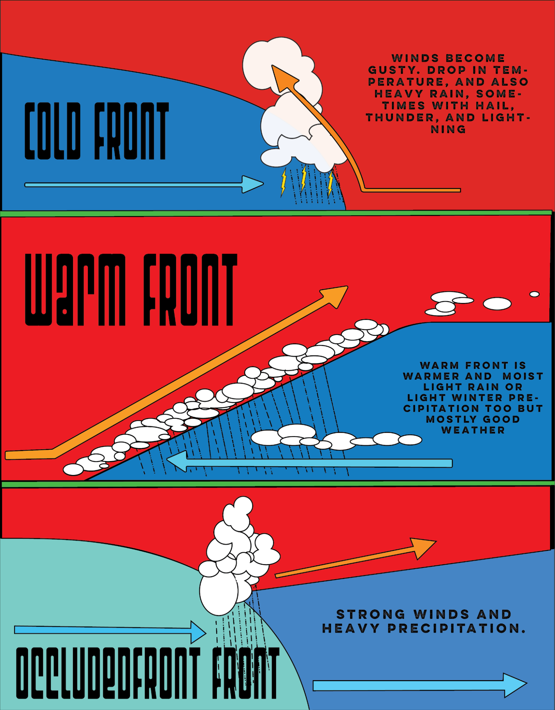
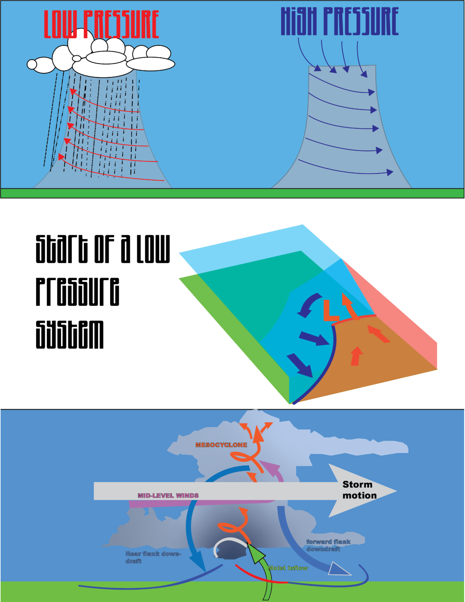

Now fronts
- Fronts:
Fronts are boundaries between different air masses characterized by variations in temperature, humidity, and wind patterns. There are three main types of fronts: cold fronts, warm fronts, and stationary fronts. Each type has specific effects on weather conditions:
- Cold Fronts: When a cold front advances, it displaces warmer air mass, leading to changes in weather. Common effects include:
- Thunderstorms: Cold fronts often trigger the development of thunderstorms. As the cold air rapidly replaces warm air, it lifts the warm, moist air ahead of it, leading to instability and the formation of thunderstorm clouds.
- Heavy Rainfall: Cold fronts can produce bands of intense rainfall, especially along and ahead of the front. The uplift of warm, moist air generates widespread precipitation.
- Temperature Drop: As the cold front passes, temperatures typically drop sharply due to the intrusion of colder air.
- Warm Fronts: Warm fronts occur when a warm air mass replaces a cold air mass. The following effects are commonly associated with warm fronts:
- Steady Precipitation: Warm fronts typically bring a more prolonged and steady precipitation event compared to the more intense but shorter-lived showers associated with cold fronts. The precipitation is often lighter and more stratiform.
- Cloudy Conditions: Warm fronts are often accompanied by extensive cloud cover, resulting in overcast skies. Low-lying stratus clouds are commonly observed along and ahead of the warm front.
- Gradual Temperature Rise: As the warm air replaces the cooler air mass, temperatures gradually increase, often leading to a milder and more humid environment.
- Stationary Fronts: Stationary fronts occur when neither the warm nor cold air mass displaces the other significantly. Weather conditions associated with stationary fronts include:
- Prolonged Precipitation: Stationary fronts can result in an extended period of precipitation, which is typically lighter to moderate in intensity. The prolonged nature of the precipitation is due to the continued convergence and lifting along the front.
- Cloud Cover: Similar to warm fronts, stationary fronts are often associated with significant cloud cover, leading to overcast conditions and the potential for fog.
- Temperature Contrasts: Temperature contrasts may exist along a stationary front, with cooler conditions on one side and warmer conditions on the other.
- Pressure Systems:
Pressure systems refer to areas of high and low atmospheric pressure. These systems influence weather conditions due to the associated airflow patterns and the resulting vertical motion of air:
- High-Pressure Systems (Anticyclones): High-pressure systems are regions characterized by sinking air and relatively higher atmospheric pressure. Effects include:
- Clear Skies: High-pressure systems often bring stable weather conditions with clear skies and limited cloud cover.
- Light Winds: The sinking air within high-pressure systems results in generally light winds, promoting calm weather conditions.
- Dry Weather: The subsiding air associated with high-pressure systems inhibits cloud formation and precipitation, leading to drier weather.
- Low-Pressure Systems (Cyclones): Low-pressure systems are areas characterized by rising air and relatively lower atmospheric pressure. Effects include:
- Cloud Formation: Rising air within low-pressure systems creates an environment conducive to cloud formation and the development of precipitation.
- Stormy Weather: Low-pressure systems are associated with unsettled weather conditions, often bringing increased cloud cover, precipitation, and potentially severe weather such as thunderstorms and heavy rain.
- Windy Conditions: The pressure gradient around low-pressure systems can result in strong winds, particularly in the vicinity of fronts and within areas of active weather.
The interaction between fronts and pressure systems can further influence weather conditions. For example, the movement and interaction of warm and cold fronts around a low-pressure system can intensify precipitation and generate more significant weather disturbances.
